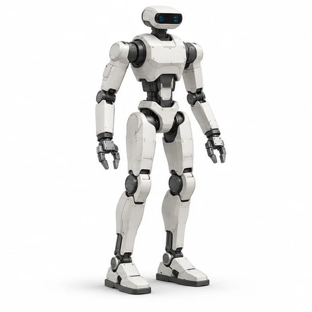
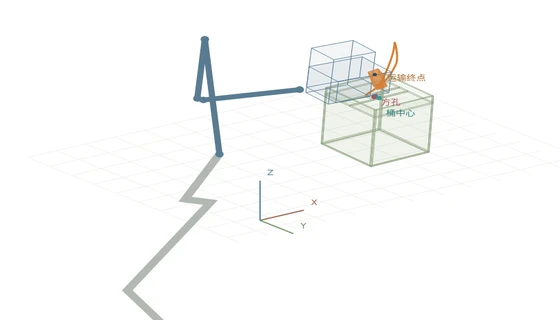

第一代本体 · 固定工位

固定位置机械臂
绑定单一工位，换线需重调工装与示教轨迹
绑定单一工位，换线需重调工装与示教轨迹

Z 型折叠升降躯干 + 轮式底盘，一台覆盖多岗位

零产线改造，直接进入按人设计的复杂工位

明确目标料架、放置区与清空判据

视觉分割定位 + 夹爪接触读数
常规跑确定性程序，异常才问模型
防撞限位复核后平滑驱动 F1 本体

记录回执、独立验证并晋升入库
成熟工序直接跑冻结程序，在线零思考延迟
一切动作必须通过传统安全内核复核放行
具身层处理非结构化变化，传统层保障可靠执行


SAM2 识别余料格口与外露纸边
闭爪抽出，CAN 读数确认全部带出
轮式底盘移至料袋旁，松爪落袋
回架复检，循环直至九格全部清空
| 本体构型 | 轮式底盘 + 5 轴 Z 型折叠升降躯干 + 3 轴头 + 双臂 |
|---|---|
| 双臂自由度 | 左右各 7 自由度机械臂，覆盖九宫格高低全部层位 |
| 移动方式 | AGV 轮式自主移动，料架与放置区间连续往返 |
| 末端与感知 | 平行夹爪（CAN 接触反馈）+ 头部/双腕多路深度相机 |
| 软件框架 | 自研 F1 Harness（PyRUA/RPent 编排 + Astra 兜底） |
| 安全内核 | F1 Owner 唯一动作出口 + Ruckig 在线轨迹平滑 |